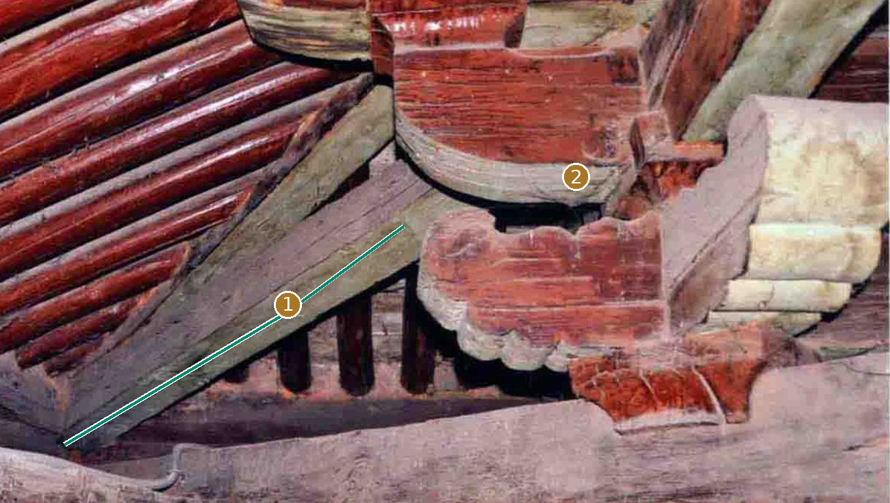
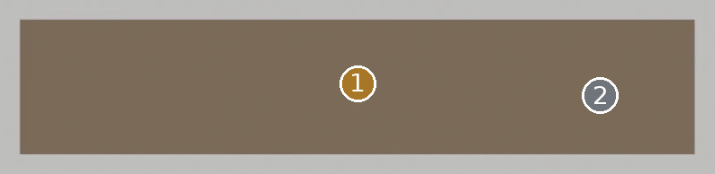
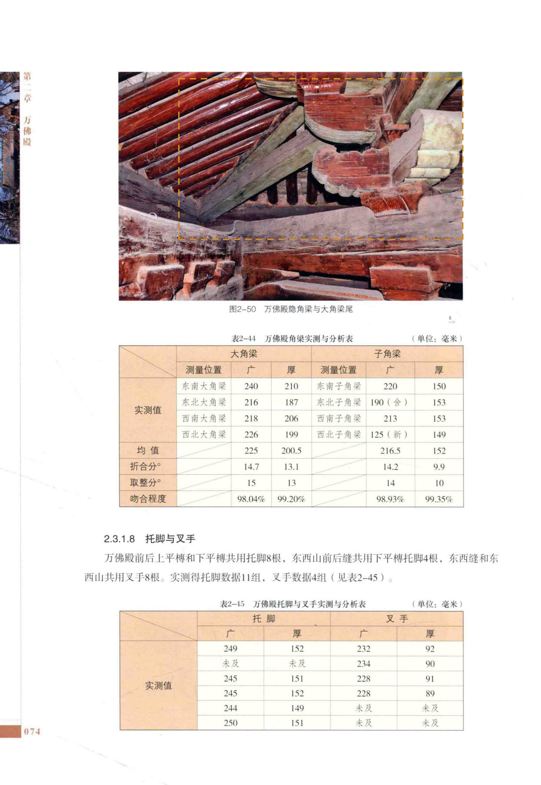

大角梁Master仍是矩形参考体
先看形，再看差异


单根全长、角端及隐藏端形不可由尾部照片补齐
定性对照：两侧未做比例归一或像素叠加。绿色实线只描原图可辨边缘；橙色虚框只表示原图查找范围。
02 / 形态细节
其他角度、截面与现有局部版本


03 / 原图与位置
目标在原始资料的哪里

安装位置与复用
东北角；东南角；西南角；西北角
变体：沿用现行登记口径
Master：CMP-FRAME-DAJIAOLIANG-001_MASTER
对应实例范围（4条登记记录，不是物理件数）
- 大角梁-东北角 · 东北角
- 大角梁-东南角 · 东南角
- 大角梁-西南角 · 西南角
- 大角梁-西北角 · 西北角
04 / 证据与边界
出处、模型身份与未知部分
仍然未知：图名包含“隐角梁与大角梁尾”；单件细分按空间关系识别，非逐件拆卸实测。
原工程记录（按原文保留）：参考体不能显示翼角梁真实斜向、端头与承托变化；不可从单一包络推定四角完全同形。
资料出处
A1 · PDF第89页 / 印刷第74页 · 归档原图 A1-p089.jpg
A1 · PDF第290页 / 印刷第275页 · 归档原图 A1-p290.jpg


模型原始渲染、网格身份与批准范围
现有 BLEND · axon 云端只读渲染；原始二进制与网格/变换未改。

现有 BLEND · front 云端只读渲染；原始二进制与网格/变换未改。

现有 BLEND · side 云端只读渲染；原始二进制与网格/变换未改。

A1、A2、A3共享测绘数据脉络，不作为三次独立复测。官方展示只作形态参考；推断、遮挡与未知不升级为实测事实。